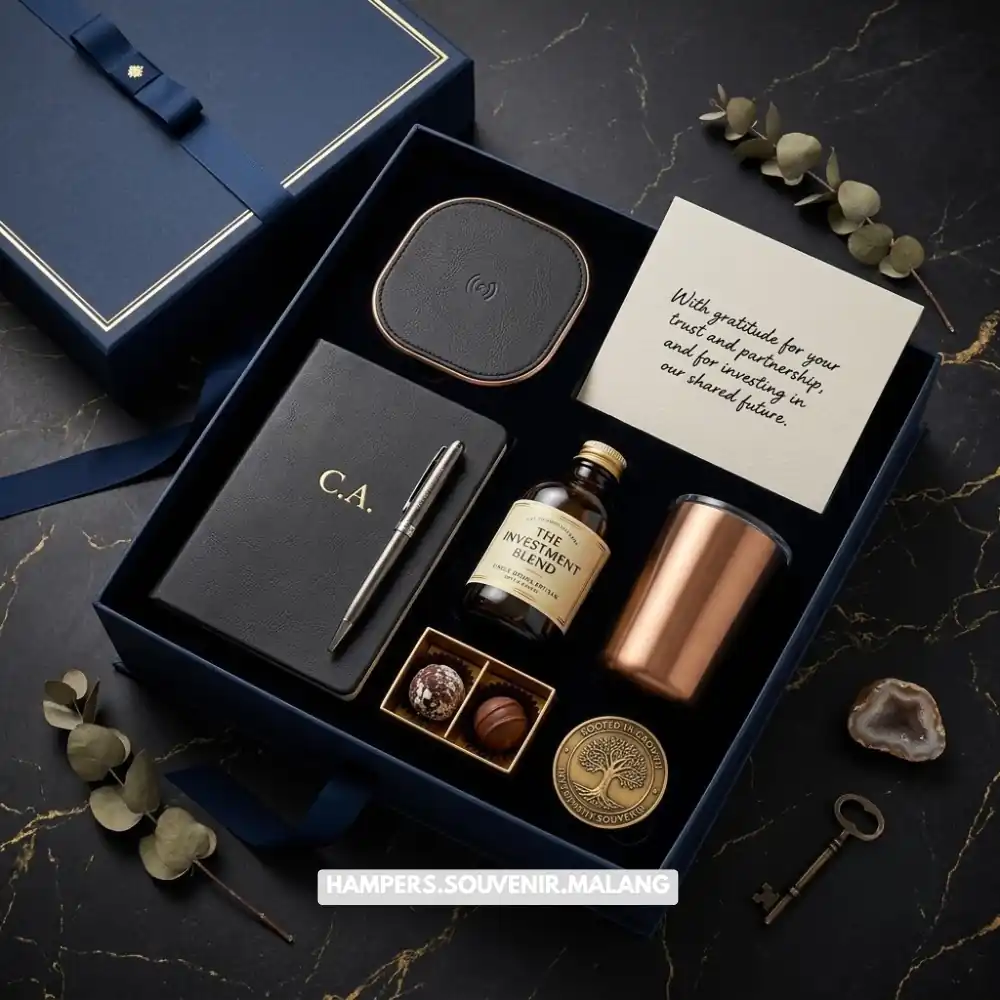

Biaya hampers kantor Malang dipengaruhi oleh jenis produk, tingkat personalisasi, jumlah pesanan, serta kompleksitas kemasan yang dipilih perusahaan.
Semakin tinggi tingkat personalisasi dan kualitas produk, umumnya biaya yang dibutuhkan juga semakin besar. Memahami faktor-faktor ini membantu perusahaan menyusun anggaran hampers secara lebih terukur dan proporsional.
- Biaya hampers kantor dipengaruhi oleh jenis produk, personalisasi, dan jumlah pesanan.
- Anggaran dapat dioptimalkan tanpa mengurangi kualitas melalui perencanaan bertingkat.
- Hampers kantor berkualitas dapat dipandang sebagai investasi jangka panjang bagi citra perusahaan.
- Konsultasi awal dengan supplier membantu menyusun paket sesuai anggaran perusahaan.
- Hampers Malang menyediakan pilihan paket hampers dengan berbagai kisaran anggaran.
Menentukan anggaran hampers kantor sering menjadi tantangan tersendiri bagi tim procurement maupun manajemen keuangan perusahaan. Anggaran yang terlalu rendah berisiko menghasilkan hampers yang kurang mencerminkan citra profesional, sementara anggaran yang tidak terencana dapat membebani pengeluaran secara tidak proporsional.
Apa Saja Faktor yang Memengaruhi Biaya Hampers Kantor?
Faktor utama yang memengaruhi biaya hampers kantor meliputi jenis dan kualitas produk yang dipilih, tingkat personalisasi kemasan dan logo, jumlah pesanan, serta kompleksitas proses distribusi ke berbagai lokasi penerima. Kombinasi faktor-faktor ini menentukan struktur biaya akhir yang perlu dianggarkan perusahaan.
Produk dengan bahan premium atau kemasan eksklusif umumnya membutuhkan biaya lebih tinggi dibandingkan produk standar. Selain itu, personalisasi seperti cetak logo, kartu ucapan khusus, atau desain kemasan custom turut menambah komponen biaya produksi.
Pengaruh Jumlah Pesanan terhadap Struktur Biaya
Jumlah pesanan berperan penting dalam menentukan efisiensi biaya per unit hampers. Pemesanan dalam jumlah besar umumnya memungkinkan perusahaan mendapatkan skema harga yang lebih efisien dibandingkan pemesanan dalam jumlah kecil, karena biaya produksi dan personalisasi dapat dibagi secara lebih merata.
Pemahaman terhadap pola ini membantu perusahaan merencanakan jumlah pesanan secara strategis, terutama saat mempersiapkan hampers untuk momen dengan jumlah penerima yang cukup besar.
Baca Juga: Harga Hampers Kantor Malang untuk Semua Budget
Bagaimana Cara Mengoptimalkan Anggaran Hampers Kantor Tanpa Mengurangi Kualitas?
Anggaran hampers kantor dapat dioptimalkan melalui perencanaan bertingkat, pemilihan produk yang efisien namun tetap berkualitas, serta pemesanan lebih awal untuk menghindari biaya tambahan akibat waktu produksi mendesak. Pendekatan ini memungkinkan perusahaan tetap menghadirkan hampers berkualitas dengan pengeluaran yang terkendali.

Perencanaan bertingkat, misalnya membedakan paket untuk klien utama dan paket umum untuk penerima lain, membantu perusahaan mengalokasikan anggaran secara proporsional sesuai nilai strategis masing-masing penerima.
Pentingnya Konsultasi Awal dengan Supplier
Konsultasi awal dengan supplier membantu perusahaan memahami opsi produk dan skema harga yang tersedia sebelum menentukan anggaran akhir. Melalui konsultasi ini, perusahaan dapat memperoleh gambaran realistis mengenai kombinasi produk dan personalisasi yang sesuai dengan anggaran yang dimiliki.
Pendekatan konsultatif ini juga membantu menghindari kesalahan perencanaan, seperti anggaran yang tidak sesuai dengan ekspektasi kualitas produk yang diinginkan.
Baca Juga: Biaya Hampers Kantor Malang: Faktor yang Memengaruhi Harga
Mengapa Biaya Hampers Kantor Dapat Dianggap sebagai Investasi Branding?
Biaya hampers kantor dapat dianggap sebagai investasi branding karena hampers berperan dalam membangun kesan profesional, memperkuat pengenalan merek, dan mendukung hubungan jangka panjang dengan klien maupun karyawan. Nilai yang dihasilkan dari kesan positif ini sering kali melampaui nilai nominal pengeluaran hampers itu sendiri.
Hampers yang dipersonalisasi dengan identitas merek secara konsisten membantu memperkuat pengenalan visual perusahaan setiap kali produk tersebut digunakan atau dipajang oleh penerima. Efek ini berkontribusi pada citra merek dalam jangka panjang, terutama bila dilakukan secara berkelanjutan setiap tahun.
Mengukur Nilai Jangka Panjang dari Hampers Korporat
Nilai jangka panjang dari hampers korporat dapat dilihat dari kualitas hubungan yang terbangun dengan klien maupun tingkat kepuasan karyawan terhadap apresiasi yang diberikan perusahaan. Meski sulit diukur secara langsung dalam angka, dampak ini sering tercermin dari loyalitas klien dan retensi karyawan yang lebih baik.
Jika perusahaan Anda ingin menyusun anggaran hampers kantor yang optimal tanpa mengorbankan kualitas, tim Hampers Malang siap membantu memberikan konsultasi gratis mengenai pilihan paket sesuai kebutuhan dan anggaran Anda. Hubungi Hampers Malang sekarang untuk mendapatkan penawaran terbaik.
Biaya hampers kantor dipengaruhi oleh jenis produk, personalisasi, dan jumlah pesanan, namun dapat dioptimalkan melalui perencanaan bertingkat dan konsultasi awal dengan supplier. Memandang hampers sebagai investasi branding membantu perusahaan melihat pengeluaran ini secara lebih strategis. Hampers Malang siap membantu perusahaan Anda menyusun paket hampers kantor yang sesuai kualitas maupun anggaran.
Tanya Jawab
Biaya hampers kantor dipengaruhi oleh jenis produk, tingkat personalisasi, jumlah pesanan, dan kompleksitas distribusi ke penerima.
Ya, pemesanan dalam jumlah besar umumnya memungkinkan perusahaan mendapatkan skema harga yang lebih efisien per unit hampers.
Perusahaan dapat menghubungi tim Hampers Malang untuk konsultasi gratis mengenai kebutuhan, jumlah pesanan, dan estimasi anggaran hampers kantor.

Butuh Hampers Kantor Eksklusif?
Solusi Hampers & Corporate Gift Kreatif di Malang Raya.
Ditulis oleh Tim Maroon Souvenir
Sahabat mahasiswa dan pelaku bisnis di Malang Raya. Berpengalaman menangani merchandise event kampus, instansi pemerintahan, dan hotel berbintang di Batu.